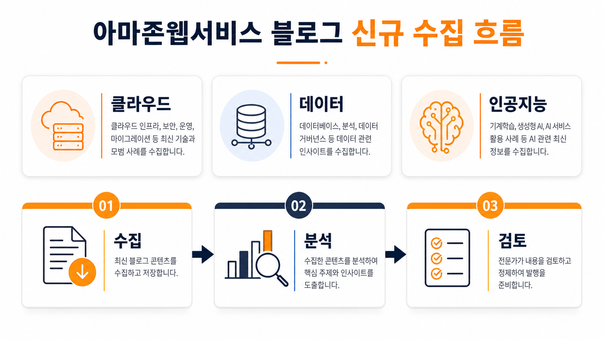
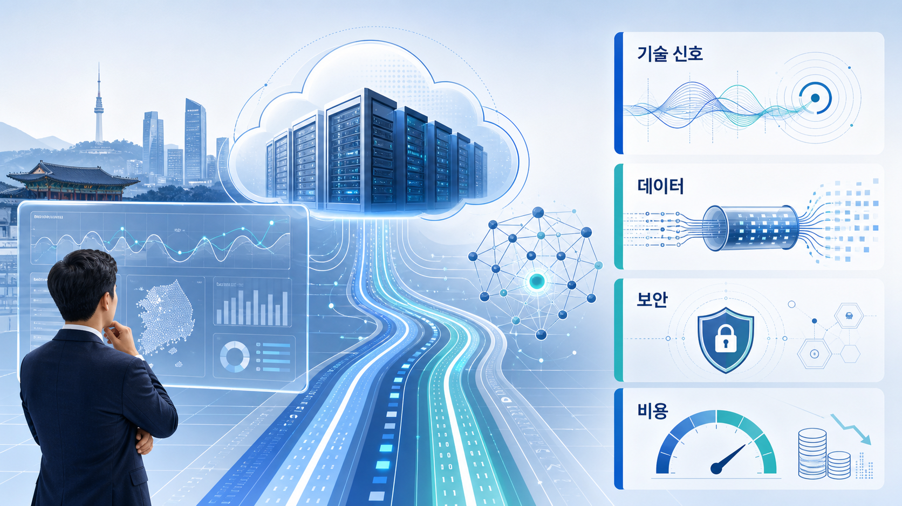
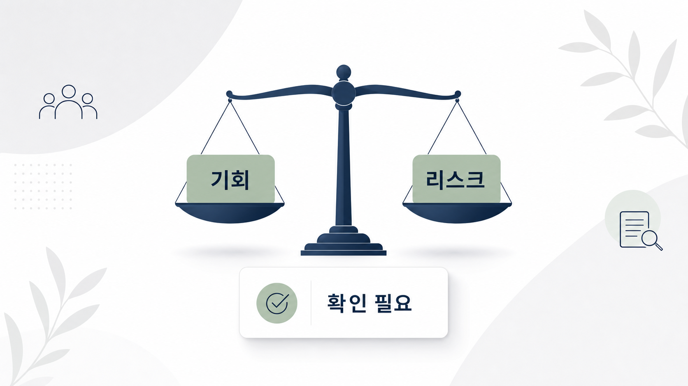

아마존웹서비스 머신러닝 블로그
기존 서비스에 에이전트형 오버레이를 더하는 전환 패턴
기존 응용프로그램 인터페이스와 서비스를 다시 만들지 않고 에이전트 간 상호작용 계층을 덧붙이는 패턴이 소개되었습니다.
원문 보기공식 피드 세 종류를 확인하고, 신규 원문은 로컬 원본 저장소와 엘엘엠 위키 수집함으로 처리한 뒤 기업 인공지능·데이터·클라우드 관점에서 읽을 포인트를 정리했습니다.

원문 저장, 엘엘엠 위키 처리, 지브레인 임포트, 블로그 발행의 흐름입니다.
아마존웹서비스 머신러닝 블로그
기존 응용프로그램 인터페이스와 서비스를 다시 만들지 않고 에이전트 간 상호작용 계층을 덧붙이는 패턴이 소개되었습니다.
원문 보기아마존웹서비스 머신러닝 블로그
모델 학습 성능 최적화 주제가 최신 그래픽 처리 장치와 관리형 학습 환경을 중심으로 제시되었습니다.
원문 보기아마존웹서비스 머신러닝 블로그
영상 품질 개선 모델을 관리형 학습·추론 환경에 배포하는 활용 사례가 공개되었습니다.
원문 보기아마존웹서비스 머신러닝 블로그
클라우드 서비스 상태 데이터를 분석해 실행 가능한 통찰을 찾는 인공지능 에이전트 활용이 다뤄졌습니다.
원문 보기아마존웹서비스 머신러닝 블로그
에이전트형 인공지능에서 데이터 거버넌스, 접근 제어, 지식 검색을 함께 설계하는 구조가 설명되었습니다.
원문 보기다섯 건 모두 인공지능과 데이터 활용에 연결되어 있습니다. 관찰된 축은 기존 서비스의 에이전트화, 학습·영상 처리 성능 개선, 운영 상태 분석 자동화, 거버넌스형 데이터 접근입니다. 단, 각 항목의 실제 적용 가능성은 원문과 공식 문서에서 리전, 비용, 보안 조건을 확인해야 합니다.

기술 변화는 데이터, 보안, 비용 조건을 함께 검토할 때 기업 의사결정에 연결됩니다.
신규 글은 기존 서비스와 새 에이전트 인터페이스를 연결하는 패턴을 보여줍니다. 이는 전면 재구축보다 낮은 변경으로 시작할 수 있는 가능성을 뜻하지만, 인증과 관측성 일관성은 확인 필요입니다.
에이전트가 데이터를 직접 조회하거나 도구를 호출하는 구조에서는 권한, 비용 한도, 민감정보 차단이 설계 초기에 포함되어야 합니다.
가속기와 모델 배포 글은 성능 개선 가능성을 제시하지만, 실제 업무에서는 비용 대비 성능과 품질 평가 기준을 따로 검증해야 합니다.
기업 담당자는 신규 기능 자체보다 기존 응용프로그램 인터페이스, 데이터 권한 체계, 비용 통제, 감사 로그가 함께 동작하는지를 우선 검토해야 합니다. 피드 요약만으로 판단하기 어려운 세부 조건은 확인 필요입니다.
국내 적용 시에는 한국 리전 제공 여부, 개인정보·보안 심의, 기존 운영 절차와의 연계가 핵심 검토 항목입니다. 이번 수집 자료만으로 국내 제공 범위는 단정할 수 없습니다.
이번 문서는 단계형 추진 로드맵을 제시하지 않고, 수집된 출처에서 관찰된 사실과 확인 필요 사항을 분리했습니다. 원문 검토, 보안 조건 확인, 비용 영향 산정, 기존 시스템 연동성 검토가 선행되어야 합니다.
피드 요약과 원문 링크를 기반으로 작성했으며, 세부 구현 조건은 원문에서 재확인해야 합니다.
가속기, 모델 추론, 데이터 질의는 비용 변동성이 크므로 사용량 상한과 경보 조건이 필요합니다.
에이전트형 구조에서는 데이터 접근, 도구 호출, 응답 필터링, 감사 로그가 분리되어 검토되어야 합니다.

인사이트는 관찰된 사실, 근거 출처, 의사결정 포인트 순서로 정리했습니다.
관찰된 사실 — 기존 응용프로그램 인터페이스와 서비스를 다시 만들지 않고 에이전트 간 상호작용 계층을 덧붙이는 패턴이 소개되었습니다.
근거 출처 주소 — 원문 링크
기업 의사결정 시사점·리스크·기회 — 기존 서비스 재작성보다 낮은 변경 비용이 기회이지만, 인증 전달·오류 매핑·관측성 일관성은 별도 검증해야 합니다.
관찰된 사실 — 모델 학습 성능 최적화 주제가 최신 그래픽 처리 장치와 관리형 학습 환경을 중심으로 제시되었습니다.
근거 출처 주소 — 원문 링크
기업 의사결정 시사점·리스크·기회 — 학습 성능 개선 가능성이 있으나 실제 비용 대비 성능, 인스턴스 가용 리전, 워크로드 병목 확인이 필요합니다.
관찰된 사실 — 영상 품질 개선 모델을 관리형 학습·추론 환경에 배포하는 활용 사례가 공개되었습니다.
근거 출처 주소 — 원문 링크
기업 의사결정 시사점·리스크·기회 — 미디어 품질 개선 업무에 적용 가능성이 있으나 저작권, 처리 비용, 지연 시간, 품질 평가 기준을 먼저 정의해야 합니다.
관찰된 사실 — 클라우드 서비스 상태 데이터를 분석해 실행 가능한 통찰을 찾는 인공지능 에이전트 활용이 다뤄졌습니다.
근거 출처 주소 — 원문 링크
기업 의사결정 시사점·리스크·기회 — 운영 데이터 분석 자동화 기회가 있으나 경보 해석, 권한 범위, 자동 조치 여부를 분리해 검토해야 합니다.
관찰된 사실 — 에이전트형 인공지능에서 데이터 거버넌스, 접근 제어, 지식 검색을 함께 설계하는 구조가 설명되었습니다.
근거 출처 주소 — 원문 링크
기업 의사결정 시사점·리스크·기회 — 데이터 접근 권한, 행·열 단위 통제, 질의 비용 한도, 도구 호출 정책을 함께 검토해야 하므로 데이터 플랫폼팀과 보안팀의 공동 검토가 필요합니다.
자세한 이미지 프롬프트는 같은 날짜 폴더의 프롬프트 기록 파일에 보존했습니다. 이번 실행의 이미지는 지피티 이미지 투 인증 경로로 생성되었습니다.